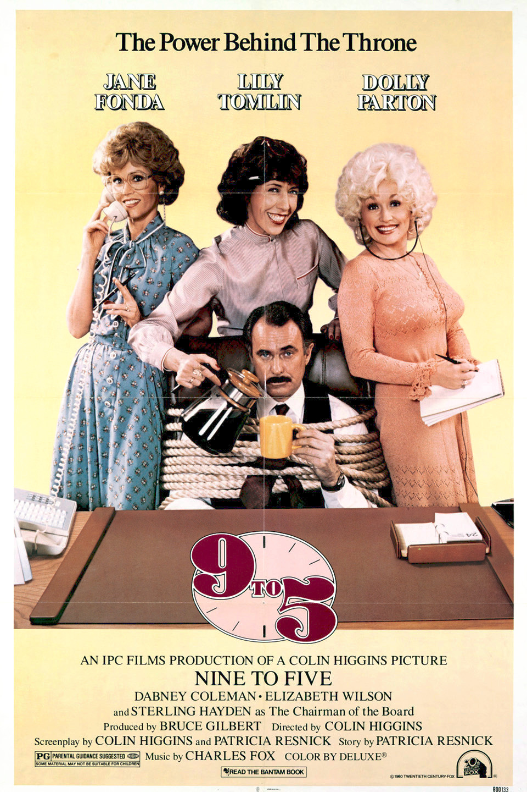

Dolly Parton was inducted into the Country Music Hall of Fame in 1999, 28 years after her first solo #1 hit. She has also won many other awards, including 10 Grammys.In 2022, Dolly Parton was inducted into the 2022 Rock & Roll Hall of Fame. She initially turned down the nomination, since she believed it was an honor she had not earned. She eventually accepted the nomination and performed at the induction ceremony.Dolly Parton also acted in several television shows and films. She received a nomination for a Golden Globe for Best Actress - Motion Picture Musical or Comedy for her role in her first feature film 9 to 5 (1980).